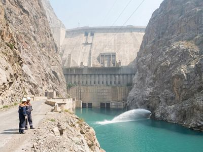
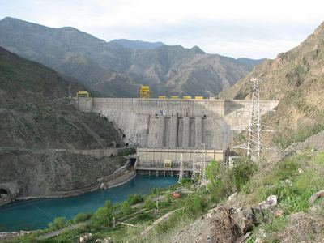
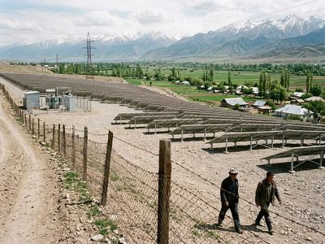

The Toktogul dam on the NarynMore than 95 percent of the electricity of the Zone is produced by hydroelectric stations on the Naryn: the Toktogul HPP with its reservoir, and the four stations of the lower cascade, which use the same water downstream. The stations are dispatched from the National Dispatch Centre at the Toktogul switchyard by Kara-Köl.
| Station | Location | In service | Units, MW | MW | Notes |
|---|---|---|---|---|---|
| Toktogul HPP | Naryn, Toktogul District | 1975 | 4 × 360 | 1,440 | Reservoir 19.0 km³; units refitted 2023-2026 (300 → 360 MW each) |
| Kurpsai HPP | Naryn, Lower Naryn | 1981 | 4 × 200 | 800 | Daily regulation below Toktogul |
| Tash-Kömür HPP | Naryn, Lower Naryn | 1987 | 3 × 150 | 450 | |
| Shamaldy-Sai HPP | Naryn, Lower Naryn | 1993 | 3 × 80 | 240 | Completed by the Territorial Power Authority |
| Uch-Kurgan HPP | Naryn, Lower Naryn | 1962 | 4 × 45 | 180 | Oldest station of the cascade |
| Talas Solar Park | Talas District | 2021 | 50 | Independent producer; output bought by Iradenergo |
The Toktogul reservoir today
Water regime
The reservoir fills with the snowmelt from April to September and is drawn down in winter, when the demand for electricity is highest. The annual schedule of releases is agreed in the joint technical commission under the Naryn Water and Power Protocol, with observers from Uzbekistan, Kazakhstan and Kyrgyzstan, so that the water for summer irrigation downstream is kept. Since 2009 a minimum reserve is kept in the reservoir. The protocol was renewed in 2022; the next schedule is agreed in 2027.
Total storage of the reservoir is 19.0 km³, of which about two thirds can be used for generation.
Export
Electricity is delivered to the grid operators of Uzbekistan and Kazakhstan under annual contracts. In 2026, by 15 October, 2.92 billion kWh were delivered, 99 percent of the contract plan.

Kurpsai HPP
Talas Solar Park, 50 MW